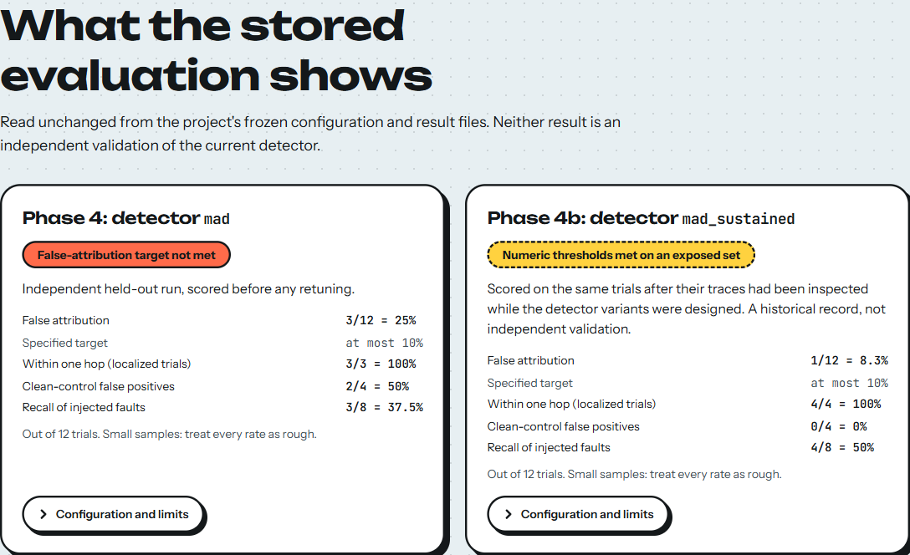
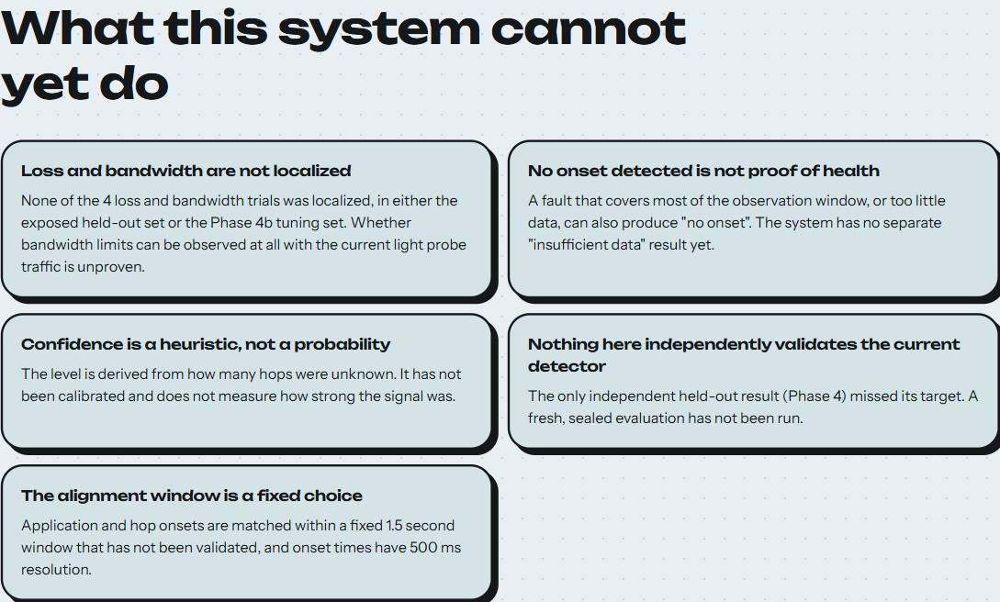
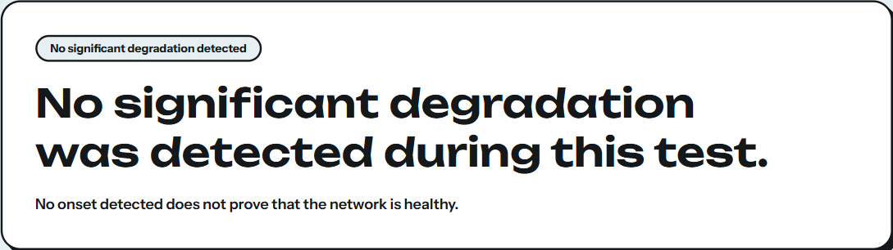
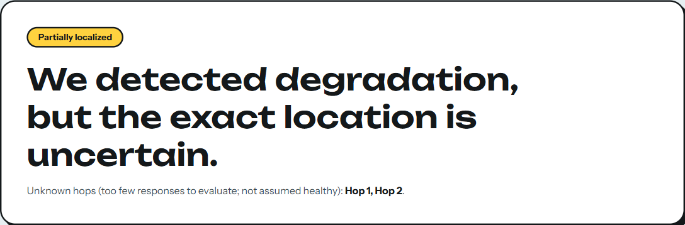

Each limitation below is supported by a file in the repository; the source is given in brackets.
| # | Limitation | Detail and consequence |
|---|---|---|
| 1 | No independent validation of the current detector | mad_sustained was never scored on data that its design had not seen. The one independent run (Phase 4, mad) missed its target at 3/12 = 25%. A sealed evaluation (spec Phase 5) has not been run. [docs/EVIDENCE_LEDGER.md] |
| 2 | Exposed held-out set | p4-held-* is permanently exposed; Phase 4b results on it are a historical record. The set was never sealed or made read-only. [ledger] |
| 3 | Loss and bandwidth are not localized | 0/4 on the exposed held-out set (Phase 4 and 4b detectors) and 0/4 on the Phase 4b tuning set (all four candidates). Whether bandwidth limits are observable at all with the current light probe traffic is unproven; bandwidth is not de-scoped, and no investigation is authorized yet. [frozen_config_4b.json] |
| 4 | Confidence is an uncalibrated heuristic | A fixed formula based almost entirely on how many hops were unknown; the corroborating fraction is 1.0 whenever a range is reported. It is not a probability and does not reflect signal strength. Phase 4's high claims were 50% accurate. [correlate/evidence.py] |
| 5 | Unknown hops cannot be assumed healthy | A hop with too few responses is unknown, and "no corroborated onset" is not proof of health. A silent hop can also prevent localization, as in p4-held-12. |
| 6 | Timing correlation is not causation | HOPTRACE says when changes appear along an observed path. It does not establish which device, link or configuration caused them. |
| 7 | "No onset" is ambiguous | It can mean healthy, a fault covering most of the window (global median/MAD baseline), or too little data. There is no "insufficient data" state. [demo script; ledger] |
| 8 | Fixed, unvalidated parameters | The 1.5 s alignment window, the 500 ms bucket width (which also limits onset resolution), k_mad = 5, min_run = 3 and the 50% unknown threshold are fixed choices. [align.py, pipeline.py] |
| 9 | Very small samples | 12 + 12 + 10 trials against a specified 120-trial tuning set and 288-cell matrix. Confidence intervals are wide (Section 12). [evaluate/power_calc.py] |
| 10 | Controlled single-path testbed | One linear path, no ECMP, one application protocol, and ICMP error rate limiting deliberately switched off in the router and server namespaces. Behaviour on real routers and networks has not been evaluated. [setup_topology.sh] |
| 11 | Ground-truth isolation is a permission test | Root can read the database; historical trial directory names encode the injected fault; evaluation result files contain labels and are world-readable on a Windows-mounted checkout. [README] |
| 12 | Phase order and labels | The UI and demo (Phase 6) were built before the Phase 5 evaluation, which the specification would not have allowed; several code comments use pre-numbering labels. [ledger] |
| 13 | Demo scenario is favourable | The demo fault covers a minority of the window by construction; the first version (a majority) produced a false negative. [demo/demo_script.md] |
| 14 | Dashboard limits | It shows four stored trials, not live measurements; it has not been tested offline or across browsers; hop roles are a frontend constant, not a data field; there is no real "not localized" bundle and none was invented; the page is one ~500 kB script. [frontend/README.md] |
| 15 | Documentation drift | The evidence ledger counts six exploratory p3-* trials, but five directories exist in experiments/; the figure used in this report is the directory count. |
| Part | Verified environment (27 Oct 2026) | Not verified |
|---|---|---|
| Testbed, probing, telemetry, Python tests | Windows 11 + WSL2 Ubuntu 24.04 (kernel 6.18.33.2-microsoft-standard-WSL2), Python 3.12.3, iproute2 6.1.0 | Native Linux, macOS, WSL1, other Python versions, a fresh Ubuntu install |
| Dashboard and its checks | Windows 11, Node 24.14.1, npm 11.11.0, Chrome (for the browser checks) | Node below 22.12; other OSes and browsers |
Windows-native Python is not supported (the code uses time.clock_gettime_ns and Linux network namespaces). Raw sockets, namespaces and tc need root. Network namespaces and tc state are lost whenever WSL restarts; rebuild the topology each session.
git clone https://github.com/KrishUsesGit/F2_Team24.git F2_Team24 cd F2_Team24
Clone to an ordinary path. A OneDrive-synced folder risks sync conflicts and locks on .git and node_modules. Inside WSL a clone on the Linux filesystem (for example ~/hoptrace) is preferable to /mnt/c/…; the ground-truth database is created under /var/lib/hoptrace in any case, never in the repository.
# in WSL2, from the repository root, as a normal user for d in prober/tests app/tests correlate/tests evaluate present/tests faultctl/tests; do PYTHONDONTWRITEBYTECODE=1 python3 -B -m unittest discover -s "$d" -p 'test_*.py' || break done python3 tools/check_repo_hygiene.py
Expected: six OK blocks reading Ran 9 tests, Ran 10, Ran 38, Ran 16, Ran 29, Ran 15 (117 in total), then OK: no per-user paths, no CR characters, .gitattributes present.
# as root in WSL2, from the repository root
sudo bash faultctl/setup_identities.sh # creates hoptrace-truth / -engine / -eval, /var/lib/hoptrace (0750),
# and /etc/sudoers.d/hoptrace-truth (tc inside ns-r1..ns-r4 only)
sudo bash testbed/phase0/teardown_topology.sh # safe if nothing exists
sudo bash testbed/phase0/setup_topology.sh # NOT idempotent: always tear down first
sudo bash testbed/phase0/verify_topology.sh
Expected (observed on 27 Oct 2026 for the last three commands): topology up.; icmp_ratelimit calibration: 0 (ns-r1, expect 0); 200 packets transmitted, 200 received, 0% packet loss with PASS: zero-loss baseline; then the hop sequence 10.10.1.2 10.10.2.2 10.10.3.2 10.10.4.2 10.10.5.2 twice with PASS. setup_identities.sh was not re-run for this report (the identities already existed on the verification machine).
sudo bash demo/run_demo.sh # as root in WSL2, about 60-90 s
The script rebuilds the topology, proves live that hoptrace-engine cannot read the ground-truth database, starts the app server, prober and client, injects a real 90 ms latency fault on Hop 2's egress after 25 s, runs the frozen detector as hoptrace-engine, writes path_bundle.json, clears the fault and measures recovery. It overwrites experiments/demo-run-01/ (the recorded trial) and has no cleanup trap if it fails midway. It was not re-run for this report; the expected result is described in demo/demo_script.md and matches the recorded trial ("Degradation appears to begin at or after Hop 3", high confidence, recovery from about 78.5 ms to about 0.01 ms at Hop 3). To keep the recorded trial, copy experiments/demo-run-01/ elsewhere before running.
cd frontend npm ci # installs exactly what package-lock.json records npm run verify # typecheck, lint, test, build, verify:dist npm run preview # serves dist/ at http://127.0.0.1:4173/ (run `npm run build` first if you skip verify)
Open http://127.0.0.1:4173/. For development with the same data use npm run dev. Expected (observed): verify:dist OK: 21 files (4 bundles, 2 evaluation projections, 1 index); no raw traces, databases, labels, credentials or remote runtime dependencies. The page must be served by vite; opening index.html directly does not load the data. The server must keep running: if it stops, every trial fails with "The data files could not be reached". The dashboard reads ../experiments and ../evaluate at build time, so keep frontend/ inside the repository checkout. The legacy static page is served with python3 -m http.server 8420 from the repository root (/ui/index.html).
experiments/ can be analysed again without a testbed. The four trials shown by the dashboard are those with a path_bundle.json.mkdir -p experiments/my-trial
ip netns exec ns-server python3 app/server.py --host 0.0.0.0 --port 8765 &
ip netns exec ns-client python3 prober/prober.py --dst 10.10.5.2 --src 10.10.1.1 --transport tcp_syn \
--rounds 70 --interval 0.5 --out experiments/my-trial/hop.jsonl &
ip netns exec ns-client python3 app/client.py --host 10.10.5.2 --port 8765 --duration 35 \
--out experiments/my-trial/app.jsonl &
# after ~25 s, inject a fault as the controller identity (hop 1-4; latency/jitter/loss/bandwidth):
su -s /bin/bash hoptrace-truth -c "cd faultctl && python3 controller.py inject --hop 2 --type latency --delay-ms 90 --trial-id my-trial"
# when the trial ends, clear it:
su -s /bin/bash hoptrace-truth -c "cd faultctl && python3 controller.py clear-latest --hop 2 --trial-id my-trial"
To analyse with the frozen configuration, mirror steps 5-6 of demo/run_demo.sh (demo/_run_engine_pipeline.py, then present/path_bundle.py). These manual commands are derived from the scripts' own argument parsers and docstrings; they were not executed for this report. Do not run the evaluate/ scripts on new data without reading Section 11 first.
| Symptom | Cause and fix |
|---|---|
| Only ~60% of probes get replies; hops look "unknown" | Kernel ICMP rate limiting. setup_topology.sh sets icmp_ratelimit=0; confirm with the "expect 0" line, and rebuild after a WSL restart. |
ip netns shows nothing; Cannot find device; controller says "is the topology up?" | WSL restarted, so namespaces are gone. Run teardown then setup again. |
Errors from ip netns add or ip link add about something already existing | setup_topology.sh is not idempotent. Run teardown_topology.sh first. |
Permission errors from the prober or ip netns exec | Raw sockets and namespaces need root. |
| Ground-truth permission errors (expected for the engine); database missing | Run setup_identities.sh. Keep the database on the Linux filesystem: /mnt/c ignores chmod and cannot enforce isolation. |
| Dashboard: "The data files could not be reached" | The preview server stopped. Restart npm run preview and reload. |
npm install is slow or conflicts | The repository is inside a OneDrive-synced folder. Clone elsewhere and run npm ci there. Node must be ≥ 22.12. |
| Port 4173 or 8420 already in use | Stop the other server, or pass a different port to vite preview / http.server. |
Shell scripts fail with \r errors | The .sh files must keep LF endings; .gitattributes enforces this on checkout. |
| Detector reports "no significant degradation" for an obvious fault | The fault probably covers most of the window, so the global median is inside the fault (Section 9.5). Use a longer baseline. |
sudo bash testbed/phase0/teardown_topology.sh # removes all six namespaces (verified) # if a fault was left behind (only needed when namespaces still exist): sudo ip netns exec ns-r2 tc qdisc del dev veth-s3-a root # example for Hop 2; use the interface from Section 5.7 pkill -f app/server.py; pkill -f prober/prober.py; pkill -f app/client.py
Removing the three identities, the sudoers rule and /var/lib/hoptrace is optional and permanently deletes recorded ground-truth events; it was not exercised for this report (the scored labels also live in evaluate/*.json). The topology teardown above was verified.
HOPTRACE demonstrates, on a controlled testbed, how an application's RTT and a path's per-hop RTT can be measured on a shared clock and compared to estimate where along an observed path application degradation appears to begin. The engineering is complete enough to run end to end: a six-namespace testbed, a raw-socket prober, a hand-written WebSocket application, a permission-isolated fault controller, a median/MAD correlation engine with typed evidence, an evidence-bounded interpretation layer and a dashboard that shows stored results. The checks run for this report all pass: 117 Python tests, 310 frontend tests, strict typecheck, zero-warning lint, a verified production build and distribution, 40 real-browser layout checks, a four-trial browser session and a live topology check.
The science is less settled than the engineering, and the project states so. The only independent evaluation missed its false-attribution target (3/12 = 25% against at most 10%). The revised detector met the numeric target only on a set it had been designed against (1/12 = 8.3%), which is not validation. Loss and bandwidth faults are not localized. Confidence is a fixed heuristic. These are results, not omissions, and the interface repeats them wherever a result is shown.
Only sources that the implementation, the protocol code or the evaluation statistics actually rely on are listed.
app/ws_protocol.py.)prober/raw_probe.py.)tc-netem(8), tc-tbf(8), ip-netns(8), veth(4), network_namespaces(7), clock_gettime(2) (CLOCK_MONOTONIC) and the kernel ip-sysctl documentation for icmp_ratelimit.socket, asyncio, statistics, sqlite3, unittest.evaluate/metrics.py.)hoptrace-phase-0-5-spec.html: the locked specification (phase numbering, constraints, EvidenceRecord definition).docs/EVIDENCE_LEDGER.md: what each data set and result may be used for.demo/demo_script.md, frontend/README.md, README.md, AUDIT_REPORT.md (2026-10-14 project audit).. ├── README.md overview, scientific status, how to run ├── docs/EVIDENCE_LEDGER.md what each data set / result may be used for ├── hoptrace-phase-0-5-spec.html locked specification (also -architecture-review, -phase-0-plan) ├── testbed/phase0/ setup / verify / teardown scripts, lib/common.sh, impair/clear helpers ├── prober/ app/ faultctl/ measurement and fault-injection code, each with tests/ ├── correlate/ synchronize, onset*, align, evidence, pipeline (+ tests/) ├── present/ interpret, technical_view, path_bundle, report (+ tests/) ├── evaluate/ metrics, selection/scoring scripts, frozen configs, result JSON ├── demo/ run_demo.sh, demo_script.md ├── experiments/ 40 trial directories (hop.jsonl, app.jsonl, trial_meta.json, ...) ├── frontend/ React + TypeScript dashboard (package.json, package-lock.json, src/, vite/, scripts/) ├── ui/ legacy static page (kept for history) ├── tools/check_repo_hygiene.py read-only repository check └── submission/ this report, the presentation, screenshots, figures, build scripts
| File | Purpose |
|---|---|
evaluate/frozen_config.json | Phase 4: mad, k_mad = 5.0, delta_align_ns = 1.5e9, tuning set and scoreboard |
evaluate/frozen_config_4b.json | Phase 4b: mad_sustained, k_mad = 5.0, min_run = 3, git commit 74c2395, environment, the unresolved loss/bandwidth limitation |
evaluate/held_out_results.json, …_4b.json | Scored held-out results (historical; overwritten if the scoring scripts are re-run) |
testbed/phase0/lib/common.sh | Single source of namespace names and addressing |
faultctl/setup_identities.sh | OS identities and the restricted sudoers rule |
frontend/package.json, package-lock.json | Dependency manifest and exact lockfile; engines.node >= 22.12 |
frontend/vite.config.ts, vite/*.ts | Data allowlist, dev-server binding and exposure guard |
.gitignore, .gitattributes | No secrets, *.db, node_modules, dist; LF line endings and byte-exact evidence |
See Section 11.3. Summary: Python tests per directory with unittest discover; python3 tools/check_repo_hygiene.py; in frontend/: npm run verify, npm run check:layout, npm run check:preview.



p4-held-01-clean1): "No significant degradation detected", with the caveat that no onset does not prove health.
p4-held-12-unknown-plus-impair: "Partially localized"; Hops 1 and 2 are unknown, "not assumed healthy".The report is generated by submission/build/build_report.py from hand-written HTML (report_part*.html) and a stylesheet; diagrams are drawn from the topology constants, measured-data figures by make_figures.py from the files in experiments/ and evaluate/, and the PDF is printed with headless Chrome. Before printing, the build asserts every headline number against the result files. Screenshots were captured from the running production build and are stored unedited in submission/screenshots/.